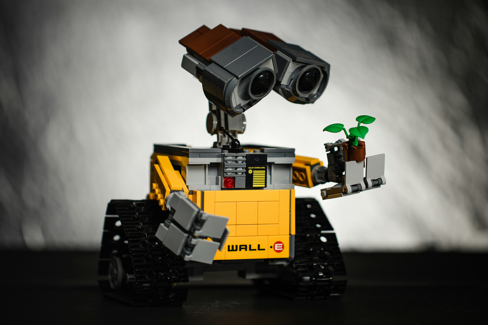

La robótica educativa es una disciplina que combina la enseñanza de conceptos STEM (Ciencia, Tecnología, Ingeniería y Matemáticas) con la práctica de construcción y programación de robots. Este enfoque pedagógico estimulante utiliza kits de robótica especialmente diseñados para educar a los estudiantes en diversas áreas del conocimiento de una manera interactiva y divertida. Los estudiantes no solo aprenden sobre los principios científicos y tecnológicos detrás de la robótica, sino que también desarrollan habilidades importantes como el pensamiento crítico, la resolución de problemas y la colaboración.
La robótica educativa ofrece a los estudiantes la oportunidad de experimentar directamente con la tecnología, permitiéndoles construir y programar robots para realizar diversas tareas. Este enfoque práctico no solo les enseña sobre los fundamentos de la ingeniería y la programación, sino que también fomenta la creatividad al desafiarlos a encontrar soluciones innovadoras para problemas concretos. Además, al trabajar en proyectos de equipo, los estudiantes aprenden a comunicarse eficazmente y a colaborar con otros, habilidades esenciales en el mundo actual centrado en la tecnología y la interconexión global. En resumen, la robótica educativa no solo prepara a los estudiantes para futuras carreras en STEM, sino que también los equipa con las habilidades necesarias para sobresalir en cualquier campo en el que el pensamiento crítico y la creatividad sean fundamentales.
